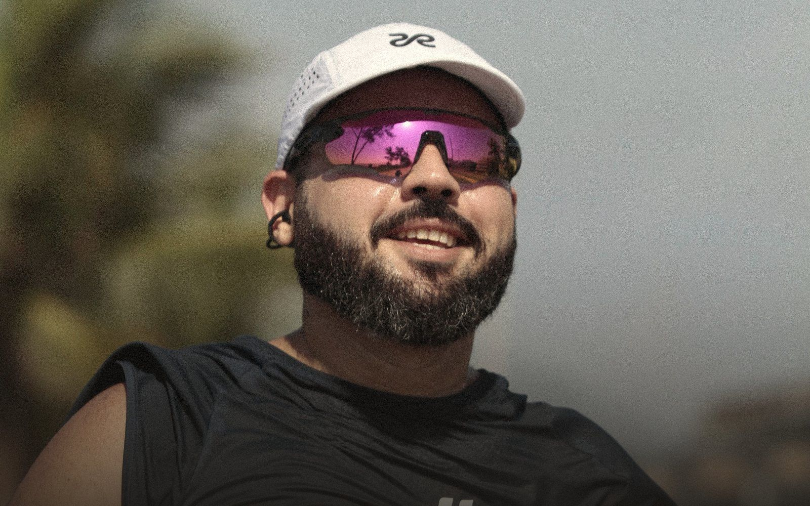

Ex-120 kg · ex-fumante · Rio de Janeiro
Amador pra amador.
Rumo aos 21K.
Sou o Jorge. Comecei a correr em abril de 2026 e conto a jornada inteira até a minha primeira meia maratona, em maio de 2027.
65 milpessoas alcançadas em um único post
149,7 milvisualizações no Instagram em 30 dias
66,7%das visualizações vêm de quem ainda não me segue
-31 kgde 120 kg para 89 kg correndo
Em destaque


Marcas que correm comigo
ParceirosPróximas provas
Plano completo06 dez
Circuito das Estações · Verãoinscrito
10K
31 dez
Vera Cruza confirmarDepende da recuperação do joelho.
15K
mai 2027
Meia Maratona do RioA prova do ano. Inscrição a confirmar.
21K
Diário do 21
Corri 0 km
e treinei todo dia
A recuperação da lesão, semana a semana, até a Meia do Rio.
Ler o episódio 1